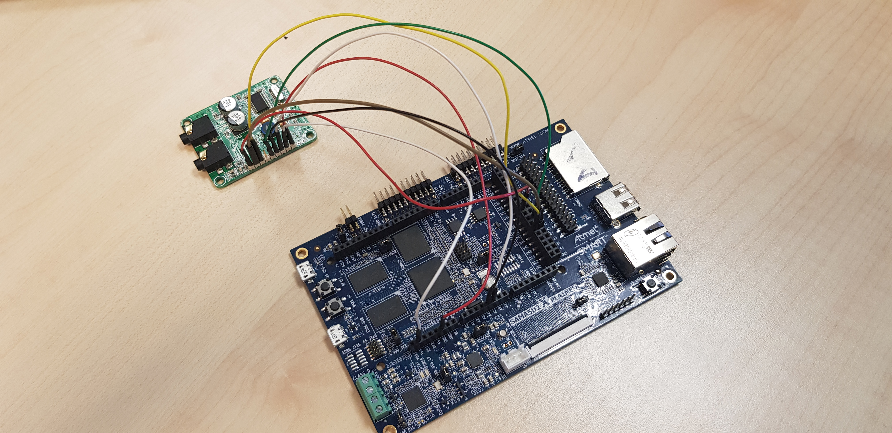

Using I2SC (Inter-IC Sound Controller)
Introduction
This page explains how to enable and configure I2SC from SAMA5D2 and SAM9X60 SoCs to an external codec, using MikroElektronika audio codec PROTO board as an example.
The Inter-IC Sound Controller (I2SC) provides a 5-wire, bidirectional, synchronous, digital audio link to external audio devices: I2SC_DI(ADCDAT), I2SC_DO(DACDAT), I2SC_WS(LRCLK), I2SC_CK(BCLK), and I2SC_MCK(MCLK) pins.
Characteristics:
- Master, Slave, and Controller Modes
- Slave: Data Received/Transmitted
- Master: Data Received/Transmitted And Clocks Generated
- Controller: Clocks Generated
- Individual Enable and Disable of Receiver, Transmitter and Clocks
- Configurable Clock Generator Common to Receiver and Transmitter
- Suitable for a Wide Range of Sample Frequencies (f s ), Including 32 kHz, 44.1 kHz, 48 kHz, 88.2 kHz, 96 kHz, and 192 kHz
- 32 f s to 1024 f s Master Clock Generated for External Oversampling Data Converters
- Support for Multiple Data Formats
- 32-, 24-, 20-, 18-, 16-, and 8-bit Mono or Stereo Format
- 16- and 8-bit Compact Stereo Format, with Left and Right Samples Packed in the Same Word to Reduce Data Transfers
- DMA Controller Interfaces the Receiver and Transmitter to Reduce Processor Overhead
- One DMA Controller Channel for Both Audio Channels
- Smart Holding Registers Management to Avoid Audio Channels Mix After Overrun or Underrun
- For SAM9X60 only:
- 1- to 8-channel Time Division Multiplexed (TDM) with Frame Synchronization
MikroElektronika PROTO Audio Codec Board
The PROTO board can be used to test capture and playback on I2SC. More details regarding this board can be found on
https://www.mikroe.com/audio-codec-proto-board
Prerequisites
- Linux4sam 5.8 or newer or vanilla kernel 4.18 (driver only) or newer;
- kernel must be compiled with SND_SOC_MIKROE_PROTO
- available only on SAMA5D2 and SAM9X60 SoCs;
- SAMA5D2 SoC can be tested with SAMA5D2 Xplained board:
| Controller | I2S wire | board connector |
| i2s0 | I2SC_MCK | J17 - 23 |
| I2SC_CK | J17 - 17 |
| I2SC_WS | J17 - 22 |
| I2SC_DO | J17 - 25 |
| I2SC_DI | J17 - 26 |
| i2s1 | I2SC_MCK | J17 - 4 |
| I2SC_CK | J17 - 5 |
| I2SC_WS | J8 - 1 |
| I2SC_DO | J9 - 3 |
| I2SC_DI | J9 - 2 |
- SAM9X60 SoC can be tested with SAM9X60-EK board:
| Controller | I2S wire | board connector |
| i2s | I2SMCC_MCK | J16 - 7 |
| I2SMCC_CK | J16 - 12 |
| I2SMCC_WS | J16 - 35 |
| I2SMCC_DO | J16 - 40 |
| I2SMCC_DI | J16 - 38 |
Wire setup
The I2SC pins must be connected to the codec in the following way:
| I2SC |
PROTO codec |
| I2SC_CK |
SCK |
| I2SC_DI |
MISO |
| I2SC_DO |
MOSI |
| I2SC_WS |
ADCL (for capture) |
| I2SC_WS |
DACL (for playback) |
Also, you will need to connect PROTO SDA (Data Input) and SCL (Clock Input) pins to a TWI interface.
Bellow you can see a picture with the I2SC0 and I2C0 connected to the PROTO board:

On Linux4sam 6.0 release, the
i2s0_proto overlay can be used for the setup in the picture. For this overlay, the PROTO SDA and SCL need to be connected to the board's
i2c0 bus:
| PROTO codec |
board connector |
| SDA |
J8 – 5 (A4) |
| SCL |
J8 – 6 (A5) |
Boot with the following u-boot command:
=> bootm 0x24000000#kernel_dtb#i2s0_proto
## Loading kernel from FIT Image at 24000000 ...
Using 'kernel_dtb' configuration
Trying 'kernel' kernel subimage
Description: Linux4SAM Linux kernel
Type: Kernel Image
Compression: uncompressed
Data Start: 0x240000e0
Data Size: 3835928 Bytes = 3.7 MiB
Architecture: ARM
OS: Linux
Load Address: 0x22000000
Entry Point: 0x22000000
Hash algo: crc32
Hash value: 7fca0b0c
Hash algo: sha1
Hash value: 45cbd1fe15c283ef26056917fb4e10e2ce6b30e4
Verifying Hash Integrity ... crc32+ sha1+ OK
## Loading fdt from FIT Image at 24000000 ...
Using 'kernel_dtb' configuration
Trying 'base_fdt' fdt subimage
Description: Flattened Device Tree blob
Type: Flat Device Tree
Compression: uncompressed
Data Start: 0x243a8a24
Data Size: 44591 Bytes = 43.5 KiB
Architecture: ARM
Load Address: 0x23000000
Hash algo: crc32
Hash value: 9c933a6d
Hash algo: sha1
Hash value: c249364df161f1158f084ab0191c034a519a9fdd
Verifying Hash Integrity ... crc32+ sha1+ OK
Loading fdt from 0x243a8a24 to 0x23000000
## Loading fdt from FIT Image at 24000000 ...
Using 'i2s0_proto' configuration
Trying 'fdt_i2s0_proto' fdt subimage
Description: Device Tree blob PROTO Audio board overlay
Type: Flat Device Tree
Compression: uncompressed
Data Start: 0x243b9b64
Data Size: 1066 Bytes = 1 KiB
Architecture: ARM
Load Address: 0x23170000
Hash algo: crc32
Hash value: 38a511f6
Hash algo: sha1
Hash value: 74d5c3996811a9307097969d8fe3c5e63b9973a0
Verifying Hash Integrity ... crc32+ sha1+ OK
Loading fdt from 0x243b9b64 to 0x23170000
Booting using the fdt blob at 0x23000000
Loading Kernel Image ... OK
Loading Device Tree to 3fb47000, end 3fb54f5f ... OK
Starting kernel ...
Make sure the output of the
bootm command is the same as above and that
fdt_i2s0_proto overlay is applied .
For SAM9X60, the overlay can be found at
i2s_proto overlay, and
#i2s_proto needs to be used instead. The PROTO SDA and SCL need to be connected to the board's
i2c0 bus:
| PROTO codec |
board connector |
| SDA |
J16 – 3 (PA0) |
| SCL |
J16 – 5 (PA1) |
Probing
If everything works well, at linux boot look for:
ALSA device list:
[...]
#2: wm8731 @ sama5d2_xplained
Another step to assure that we are using the right device is to search
/proc file system:
# cat /proc/asound/pcm | grep -i wm8731
02-00: WM8731 HiFi wm8731-hifi-0 : : playback 1 : capture 1
These steps are necessary to see if the drivers probed and to get the ALSA device id. In both prints, it is the first number on the line:
2 in our example. Also, we will need to find our complete device name:
# aplay -L
[...]
sysdefault:CARD=sama5d2xplain_1
wm8731 @ sama5d2_xplained,
Default Audio Device
In this list, our board is the one with the wm8731 codec. In our case, the device’s name is:
sysdefault:sama5d2xplain_1
Playback
First, we need to use
amixer (or
alsamixer) to enable the playback. We must enable 'Output Mixer HiFi Playback Switch' (replace
–c 2 with your
–c <ALSA device id>):
# amixer -c 2 cset name='Output Mixer HiFi Playback Switch' on
And we should see:
numid=13,iface=MIXER,name='Output Mixer HiFi Playback Switch'
; type=BOOLEAN,access=rw------,values=1
: values=on

Before starting the playback, make sure that the
I2SC_WS pin is connected to the
DACL pin.
Insert headphones in the playback jack and check sound on both channels (replace
-Dsysdefault:sama5d2xplain_1 with your device’s name):
# speaker-test -Dsysdefault:sama5d2xplain_1 -c 2
Capture
Use
amixer (or
alsamixer) to enable sound recording (replace
–c 2 with your
–c <ALSA device id>):
# amixer -c 2 cset name='Input Mux' 1
numid=14,iface=MIXER,name='Input Mux'
; type=ENUMERATED,access=rw------,values=1,items=2
; Item #0 'Line In'
; Item #1 'Mic'
: values=1# amixer -c 2 cset name='Mic Capture Switch' on
numid=6,iface=MIXER,name='Mic Capture Switch'
; type=BOOLEAN,access=rw------,values=1
: values=on
Before starting the record, make sure that the
I2SC_WS pin is connected to the
ADCL pin.
Connect a PC or a low impedance microphone to the Mic jack and start recording (replace
–Dplughw:2 with your
–Dplughw:<ALSA device id>):
# arecord -Dplughw:2 -c 2 -f S16_LE out.wav
Stop the recording after a few seconds and playback the resulting out.wav file. Make sure sound is on both channels (replace
–Dplughw:2 with your
–Dplughw:<ALSA device id>)
Before starting the playback, make sure that the
I2SC_WS pin is connected to the
DACL pin
# aplay -Dplughw:2 out.wav
For other questions regarding audio configurations and setup please see
Audio FAQ.